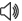

Резултати
Europeana разделя намерените резултати в 4 категории: текст, изображения, видео и аудио.
Обектите, включени във всяка една от тези категории, са:
- Текстове
 : книги, писма, архивни документи, дисертации, стихове, статии от вестници и списания, факсимилета, ръкописи и музикални текстове.
: книги, писма, архивни документи, дисертации, стихове, статии от вестници и списания, факсимилета, ръкописи и музикални текстове.
- Изображения
 : картини, рисунки, фотографии, карти и снимки на музейни експонати
: картини, рисунки, фотографии, карти и снимки на музейни експонати
- Видео
 : филми, кинопрегледи и телевизионни програми.
: филми, кинопрегледи и телевизионни програми.
- Звукови файлове : музика и фонографски записи, аудиозаписи, дискове и радиопредавания.
Резултатите са представени в табличен формат  , в линията на времето
, в линията на времето  или на карта
или на карта  . Може да подредите допълнително резултатите по вид на обекта, език, дата, страна, доставчик или авторски права, използвайки лявото меню в страницата.
. Може да подредите допълнително резултатите по вид на обекта, език, дата, страна, доставчик или авторски права, използвайки лявото меню в страницата.
Повече детайли за обекта можете да намерите като последвате връзката от списъка с резултатите. За да видите дигиталните обекти в тяхната пълнота (например желаете да прочетете цялата книга, да видите изображението в пълен размер или да гледате видео материала), последвайте връзката 'Виж обекта в' разположена непосредствено под изображението. Тази връзка ще Ви отведе до сайта на организацията, предоставила дигиталния обект на Europeana.
Дигитален обект
След извеждането на намерените резултати, последвайте връзката към обекта, който искате да разгледате. Тя ще Ви отведе до страница, където можете да намерите повече детайли за него.
- Авторски права и лицензна информация
Под изображението на обекта ще намерите информация за авторските права и лицензите, отнасящи се конкретно до него.
Забележка: към настоящия момент около 3 милиона обекти в Europeana са с изяснени авторски права. Очаква се този брой да нараства с подобряването на качеството на метаданните и стандартите за описанието им.
- Подобно съдържание
В дъното на страницата, под връзката 'Изследвай още!',може да видите подобно съдържание на обекта, който разглеждате в момента. До 10 обекта с подобно съдържание са показани в лентата с изображения.
- Преведи детайлите
Ако желаете да преведете детайлите на дигиталния обект на Вашия език, последвайте връзката 'Преведи детайлите' в горния десен ъгъл. От падащото меню изберете езика, на който желаете да преведете данните. Услуга, която е външна за портала, ще идентифицира оригиналния език автоматично и не е нужно изричното му уточняване.
- Външни търсачки
Много от полетата (напр., автор, дата, тип) в метаданните на обекта имат активна връзка, водеща до подобни на намерените резултати. Ако до полето има изобразен малък триъгълник, това означава, че може да търсите по тази фраза и през външна търсачка. Когато кликнете на триъгълника ще се появи прозорец, от който може да си изберете търсачка, която да използвате напр. Wikipedia, IMDB, Google. Това ще Ви отведе до нови резултати намерени през нея.
- Връзка към ново търсене в Europeana
Връзките от полетата, които не са отбелязани с триъгълник, ще Ви отведат до ново търсене в Europeana по тази фраза. Това е бърз начин до намиране на ново съдържание чрез търсене по точно определен автор, специфична рубрика или съдържание на определен музей, архив или библиотека.
- Вижте обекта на сайта на доставчика
Можете да разгледате дигиталния обект в неговата пълнота (напр. желаете да прочетете книгата, видите изображението в пълен размер или гледате видео) като последвате връзката от 'Виж обекта в', която ще намерите под изображението на обекта. Тази връзка ще Ви отведе до уебсайта на организацията, предоставила дигиталния обект на Europeana. До уебсайта на същата организация ще Ви отведе и връзката от изображението на обекта.
В случайте, когато доставчиците на съдържание са представили голям обем изображения, можете също да кликнете върху увеличаващата лупа  разположена под тъмбнейла, за да видите пълните детайли на обекта, заедно с информация за правата за ползване както и функциите за споделяне и вграждане на обекта.
разположена под тъмбнейла, за да видите пълните детайли на обекта, заедно с информация за правата за ползване както и функциите за споделяне и вграждане на обекта.
Други функции
- Сподели: може да споделяте своите любими дигитални обекти по е-мейл, във Facebook, Twitter или Google+ като кликнете на иконата (разположена в горния десен ъгъл) на някоя от социалните мрежи. Още възможности ще намерите като кликнете на бутона плюс.
- Вгради: разположена в горния десен ъгъл, тази функция ще Ви помогне да генерирате HTML код, който може да вгради дигиталния обект във Вашия сайт или блог.
- Цитирай в Уикипедия: разположена в горния десен ъгъл, под бутона Вгради тази функция ще ви помогне да направите линк към Europeana или да цитирате обекта в Уикипедия. Кликнете Цитирай в Уикипедия за да генерирате код, форматиран по начин за директно вграждане в статия за Уикипедия.
- Вход | Регистрация: отново разположена в горния десен ъгъл, тази функция ще Ви отведе до Вашето персонално място в Europeana - Моята Europeana.